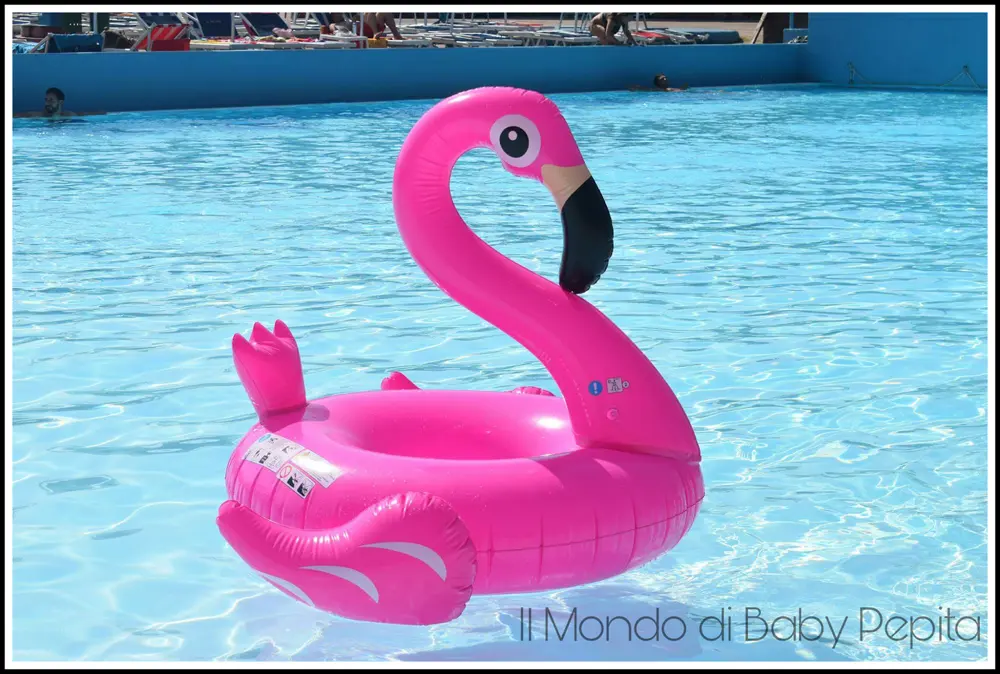
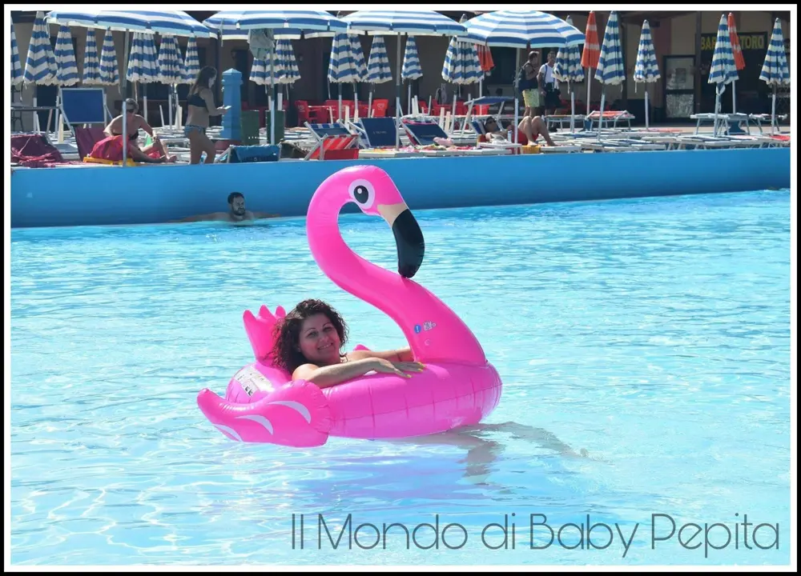
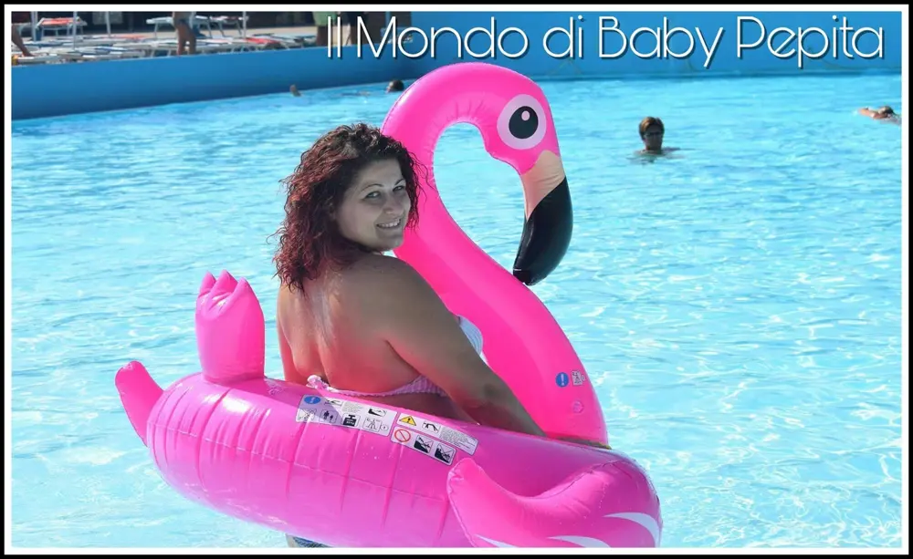
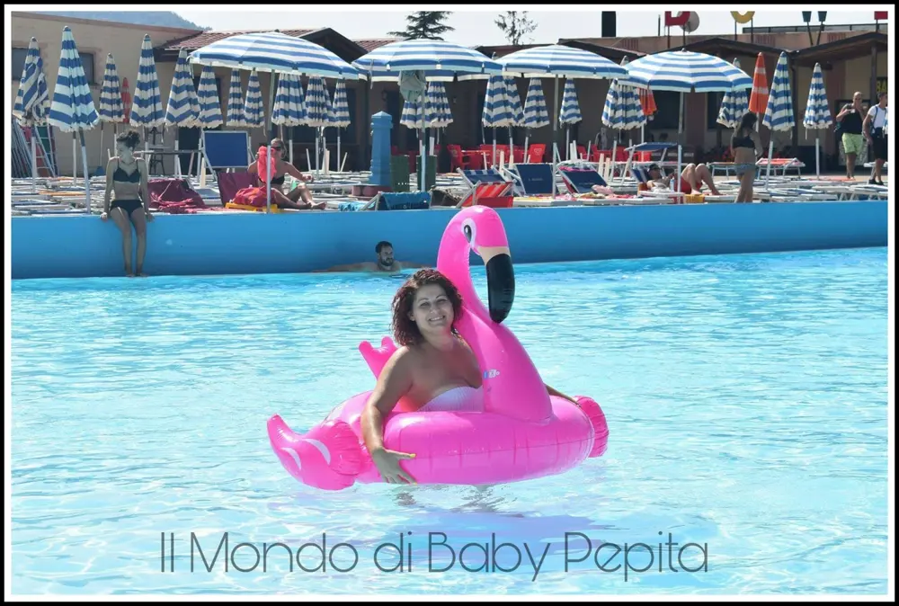
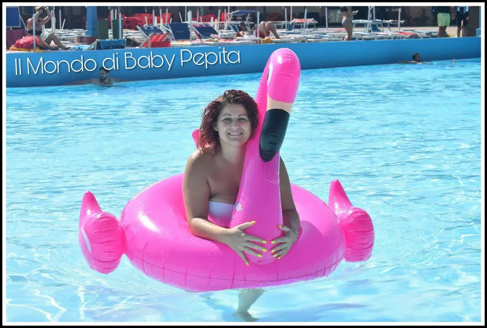
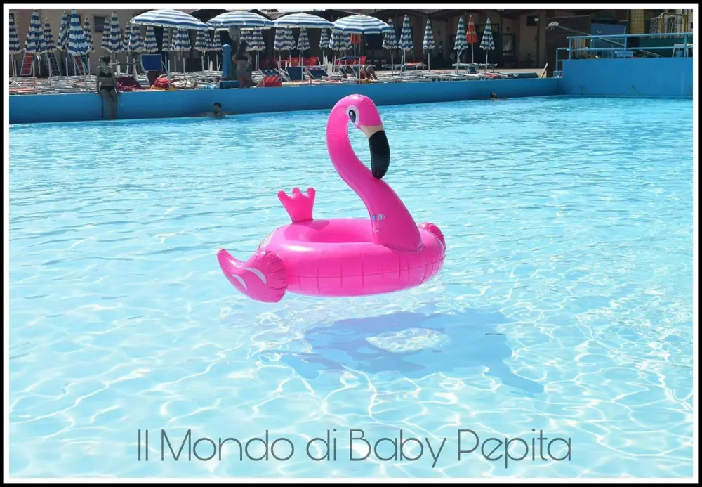

Canotto: Gonfiabile Fenicottero
Canotto: È arrivata l'estate e con esso anche molte attività, tra cui divertirsi al mare o in piscina.
Per i bambini è ormai noto comprare braccioli o gonfiabili per farli divertire ma soprattutto per la sicurezza.
Per i grandi invece, oltre ai giochi da riva, è di buon uso comprare gommoni, gonfiabili giganti sia per la sicurezza e sia per un pò di relax in acqua.
Quest'anno sono arrivati di moda i gonfiabili di tutte le forme più strane e divertenti. Tra le tante forme di canotto è ormai noto il fenicottero fucsia gigante.

Varia da misura a misura, dalla più piccola (ovviamente per i bambini), alla misura più grande.
Io ho avuto il piacere di testare e quindi divertirci con il fenicottero gonfiabile fucsia.
Misure: 120cm x 120cm x 100cm ovviamente gonfiato.

Ha doppia valvola per gonfiare (2 camere d'aria), uno sulla testa e l'altra per il corpo cioè la ciambella.
Abbiamo provato a gonfiarlo sia con un compressore elettrico che a bocca.
Con il compressore elettrico ci vuole un bel pò per gonfiarlo, a bocca il tempo si dimezza, anche se è un pò stressante gonfiarlo tutto a bocca quindi vi consiglierei sempre e comunque farlo con un compressore o a piede o elettrico.
Se volete invece provare a farlo solo ed esclusivamente a bocca, vi consiglio di non gonfiarlo tutto una sola persona. Quindi a bocca è meglio farlo gonfiare da più persone perchè davvero dopo un pò vi gira la testa per la grandezza del gonfiabile.
È arrivato ben imballato con anche un pezzo di materiale per una possibile bucatura.
È davvero bello come in foto, il colore è bello vivo e il materiale è bello resistente e soprattutto ben rifinito anche nella stampa del viso dell'animale.

Non so se è il mio o tutti i fenicotteri, ma dopo mezza giornata tende a sgonfiarsi un pò ma non eccessivamente.
Basta gonfiarlo un pochino ed è di nuovo pronto all'uso.

Ma comunque per una bella giornata in piscina o al mare è bello da vedere e da usare in acqua.
Io ho approfittato un pò della disponibilità di mia cognata come modella :D

Sono davvero contenta di questo prodotto in quanto è stato bello portarlo con me e divertirci con lui.
Prezzo: 23,99 €

Per acquistarlo CLICCA QUI